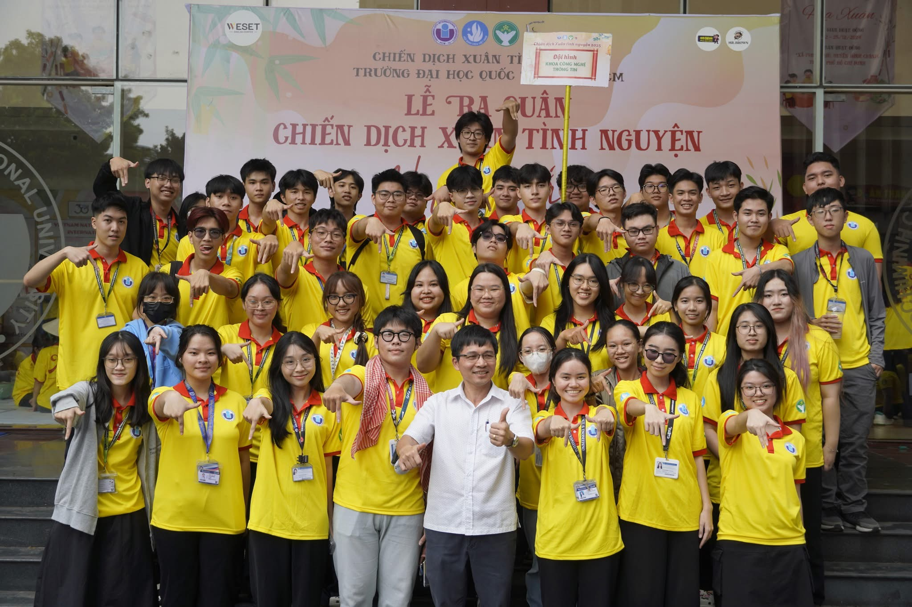

IT Youth Union

IT Youth Union (ITYU), International University | Vice Leader of Human Resources
Managed recruitment processes, including application screening, interviews, and onboarding for new members.
Developed team-building activities to strengthen collaboration and engagement among members.
Organized and led training sessions to enhance leadership and teamwork skills.
Resolved internal conflicts and facilitated communication between departments to ensure smooth operations.
Assisted in strategic planning and execution of major ITYU events, contributing to their success.